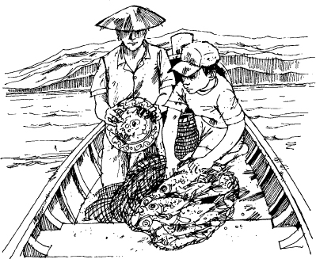

1
Daeng tìm thấy chiếc đĩa
Listen to Part 1:
Daeng lo lắng. Cậu ta nhìn lên bầu trời. Bầu trời xanh và quang đãng. Cậu ta nhìn quanh mình, về phía mặt biển êm ả. Không có gió và gió mùa vẫn chưa tới. Gió mùa sẽ tới sớm thôi. Khi gió mùa tới, mưa sẽ rơi cả ngày, mỗi ngày trong nhiều tuần liền.
Nhưng hôm nay là thời tiết hoàn hảo để đánh cá. Daeng rời mắt khỏi bầu trời và nhìn xuống thuyền mình. Đó là một chiếc thuyền đánh cá nhỏ tốt. Cậu ta lắng nghe tiếng động cơ. Mọi thứ đều ổn. Tại sao cậu ta lại lo lắng?
Daeng nhìn xuống cậu bé đang ngồi im lặng dưới đáy thuyền. Cậu bé đang sửa mấy tấm lưới đánh cá. Lek là một cậu bé ngoan. Nó giúp Daeng rất nhiều. Lek thông minh và học hỏi rất nhanh.
‘Có chuyện gì vậy?’ Daeng tự nhủ. Cậu ta lại nhìn lên bầu trời. ‘Ta đã đánh cá ở Si Racha nhiều năm rồi. Nhưng ta chưa bao giờ sợ hãi cả. Và ta không hiểu tại sao ta lại sợ hãi. Không có lý do gì để ta sợ cả.’
Khi không có tiền mua thức ăn, Daeng thường đi đánh cá trong thời tiết xấu. Cậu ta lái thuyền của mình ra khơi khi những con sóng ở ngoài biển động dữ dội. Và cậu ta chưa bao giờ sợ hãi. Hôm nay biển lặng sóng, nhưng cậu ta lại sợ.
‘Hôm nay chúng ta sẽ tìm cá gần Si Racha thôi,’ Daeng nói với cậu bé. Lek ngẩng đầu lên. Nó ngạc nhiên.
‘Nhưng thời tiết đẹp lắm mà,’ Lek nói. ‘Không có gió. Sao cậu không đi xa hơn Si Racha? Trên xa bờ cá nhiều hơn.’
‘Chúng ta sẽ ở lại đây!’ Daeng đáp.
Cậu bé không nói gì. Hôm nay có gì đó không ổn với Daeng. Có lẽ Daeng đang lo lắng về tiền bạc. Daeng đã mua chiếc thuyền này ba tháng trước. Nó rất đắt.
Lek đứng dậy và từ từ cầm lấy tấm lưới đánh cá.
Listen to Part 2:

Daeng dừng thuyền và nhìn xuống nước. Ở đây không có đá. Không có nguy hiểm. Nhưng cậu ta không thể quên lời thầy bói nói hôm qua.
‘Cẩn thận khi đi biển,’ thầy bói đã nói với cậu ta. ‘Có cái chết rình rập trên biển.’
Thầy bói muốn nói gì? Ai sẽ chết? Họ sẽ chết như thế nào? Cái gì sẽ giết họ? Bão à? Thuyền của Daeng sẽ bị chìm à?
‘Được rồi! Lưới đánh cá đã xuống nước rồi!’ Lek hét lên với Daeng.
Chiếc thuyền từ từ di chuyển về phía trước trên mặt nước xanh.
Lek quay lại và nhìn Daeng. Daeng lo lắng lắm.
‘Chuyện gì vậy?’ Lek hỏi. ‘Mọi chuyện ổn chứ?’
‘Ta không khỏe,’ Daeng nói. ‘Khi nào kéo lưới lên ta sẽ quay lại. Ngày mai ta sẽ ổn thôi.’
Listen to Part 3:
Đột nhiên, chiếc thuyền ngừng di chuyển.
Daeng nghiêng người qua bên hông thuyền. Cậu ta nhìn xuống nước.
‘Lưới đánh cá mắc vào thứ gì đó rồi!’ Cậu ta nói.
Daeng đi sang bên kia thuyền và nhìn xuống nước. ‘Ta không thấy gì cả,’ cậu ta nói.
‘Ở đây có đá không?’ Lek hỏi.
Daeng lắc đầu. ‘Không, ở đây không có đá.’
‘Vậy thì đó là gì?’ Lek nói.
‘Ta không biết, nhưng chúng ta phải kéo lưới lên thuyền!’ Daeng lo lắng.
Lek nhìn cậu ta. Có gì đó không ổn. Bây giờ đến lượt Lek cũng lo lắng. Có quái vật dưới biển - những con quái vật khổng lồ ăn thịt người. Liệu lưới đánh cá có mắc vào một con quái vật không? Lek đưa tay vào túi và sờ con dao.
‘Chúng ta phải lùi lại,’ Daeng nói. ‘Thế thì con có thể kéo lưới lên thuyền được.’
Listen to Part 4:
Rất chậm rãi, Daeng lùi thuyền. ‘Bây giờ có kéo lưới lên được không?’ Cậu ta hỏi Lek.
Lek kéo lưới đánh cá hết sức mình. Nhưng lưới vẫn không nhúc nhích. ‘Không!’ Lek đáp.
‘Kéo tiếp đi!’ Daeng bảo Lek.
Đột nhiên, Lek hét lên, ‘Được rồi! Nảy giờ nó!’
Daeng nhanh chóng đi đến bên hông thuyền và giúp cậu bé. Họ bắt đầu kéo lưới lên thuyền.
‘Có cá trong lưới kìa!’ Lek hét lên. ‘Nhìn kìa!’
Daeng nhìn vào lưới. Cậu ta thấy nhiều con cá bạc ở đó. Nhưng còn có thứ khác nữa. Đó là một vật màu xanh và trắng, sáng lấp lánh.
‘Kia là gì?’ Daeng hỏi.
Họ kéo và kéo. Cuối cùng, lưới đánh cá nằm dưới đáy thuyền. Lek bước tới và mở lưới ra. Nó nhặt vật màu xanh và trắng lên. Đó là một chiếc đĩa.
Lek bắt đầu cười.
Listen to Part 5:
‘Chúng ta bắt được một chiếc đĩa kìa! Một chiếc đĩa cũ. Tôi có nên ném nó trở lại biển không?’ Nó hỏi Daeng.
‘Không, không, khoan đã!’ Daeng nói. ‘Đưa nó cho ta.’
Daeng nhìn kỹ chiếc đĩa.
‘Ta đã thấy bức ảnh của một chiếc đĩa như thế này trên báo,’ cậu ta nói. ‘Chiếc đĩa đó rất cũ. Nó đáng giá rất nhiều tiền.’

‘Nhưng sao nó lại vào lưới chúng ta được?’ Lek hỏi.
Daeng đặt đĩa xuống và bắt đầu cho cá vào giỏ. Khi xong, cậu ta nói chuyện với Lek.
‘Có lẽ dưới đó có một con tàu đắm.’
‘Một cái gì?’ Cậu bé hỏi.
‘Một con tàu đắm – con biết không, một con tàu bị chìm từ rất lâu rồi,’ Daeng giải thích. ‘Có rất nhiều tàu thuyền cũ đắm ở Vịnh Thái Lan. Có lẽ đó là lý do tại sao lưới bị mắc. Nó mắc vào một con tàu dưới đáy biển. Và chiếc đĩa này là của con tàu đó.’
Listen to Part 6:
Daeng lại nhìn chiếc đĩa.
‘Farang - người nước ngoài từ Mỹ hoặc châu Âu - thường đến đây để tìm những con tàu đắm đó,’ cậu ta nói. ‘Họ lặn xuống nước để tìm đồ trong những con tàu đắm đó.’
Lek nhìn chiếc đĩa.
‘Bác sẽ bán chiếc đĩa này chứ?’ Nó hỏi Daeng. ‘Bác sẽ kiếm được nhiều tiền chứ?’
‘Có lẽ nếu ta bán nó cho một người farang,’ Daeng đáp.
‘Sáng nay bọn mình thấy một người farang mà. Sao bác không mang chiếc đĩa này cho anh ta?’ Lek hỏi. ‘Người farang đó thích tàu đắm lắm.’
‘Ý kiến hay đấy. Được rồi. Ta sẽ mang chiếc đĩa cho người farang đó. Có lẽ anh ta sẽ mua nó của ta.’
Daeng bọc chiếc đĩa màu xanh và trắng cẩn thận bằng một mảnh vải. Sau đó, cậu ta lái thuyền hướng vào bờ biển. Cậu ta không thấy hứng thú. Cậu ta thấy rất lạnh và sợ hãi.
Chiếc thuyền di chuyển nhanh chóng về phía Si Racha. Daeng muốn đến đó càng nhanh càng tốt.
Mục lục
- Tiêu đề
- Nội dung
- Lưu ý về câu chuyện này
- Địa điểm trong câu chuyện này
- Nhân vật trong câu chuyện này
- 1 Daeng tìm thấy đĩa
- 2 Trên tàu Quest
- 3 Cái chết đột ngột
- 4 Lek gặp nguy hiểm
- 5 Lek tìm thấy chỗ ẩn núp
- 6 Tìm kiếm xác tàu Swatow
- 7 Kho báu
- 8 Nhà sưu tầm
- 9 Quest gặp rắc rối
- 10 Đi qua mùa gió mùa
- 11 Nhà sưu tầm xuất hiện lần nữa
- Một số điểm giải thích
- Bản quyền